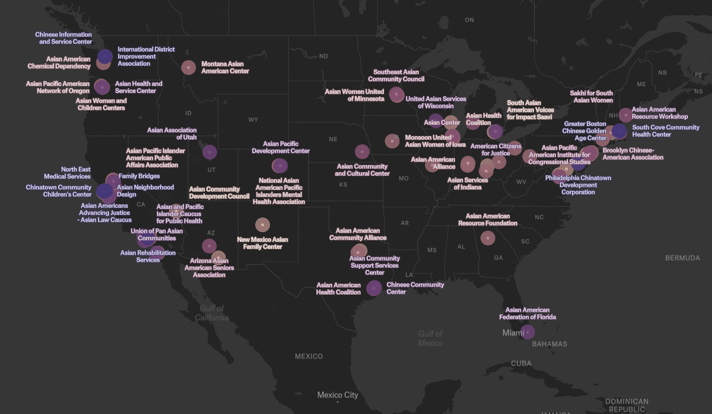
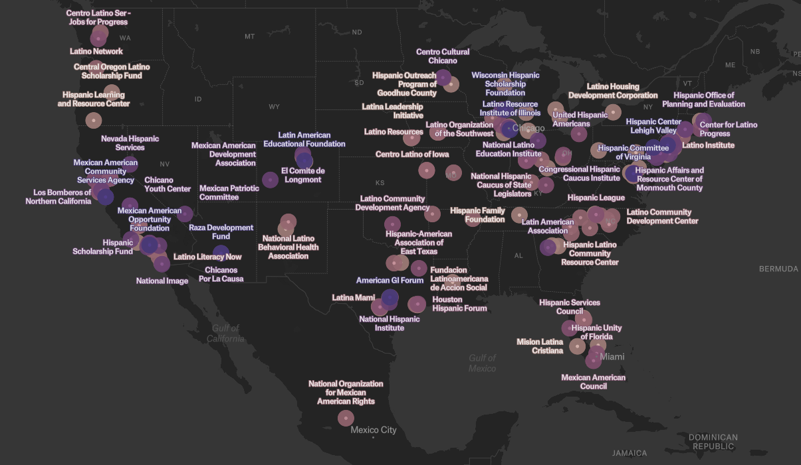

Book
Book projects
“Unseen and Uncounted: Bureaucracy, Identity, and the Birth of Panethnic Politics.” (based on dissertation)
Interviewed by Scope Conditions podcast
Winner of the 2022 Best Dissertation Award, Urban and Local Politics, APSA
Winner of the 2020 Best Paper Award, Asian Pacific American Politics, WPSA
Datasets: Asian American and Latino Advocacy and Community Service Organizations Dataset (1868-2016)
Unseen and Uncounted: Bureaucracy, Identity, and the Birth of Panethnic Politics develops a new theory of racial group formation by examining how immigrant-origin communities responded to their exclusion from federal classification systems—particularly during the War on Poverty. These exclusionary practices were not merely symbolic; they had material consequences, shaping access to public resources and political recognition. While classification decisions were made at the federal level, they were felt most acutely at the local level—through everyday interactions with street-level bureaucrats who implemented social policy. These encounters often determined whether individuals and communities were seen, counted, and served.
In response, ethnic elites engaged in political innovation: they coined new panethnic labels, formed cross-ethnic coalitions, and founded civic organizations to make their communities legible to the state. Though these efforts were locally grounded, they scaled upward. Over time, the categories and claims forged in neighborhoods and community institutions began to influence how government agencies enumerated populations and administered benefits. These bottom-up innovations ultimately helped reshape the very bureaucratic systems that had once excluded them.
The book draws on original archival research, a dataset of over 800 ethnic organizations, and computational analysis of 78,000 articles from ethnic newspapers. Through comparative analysis across cities, racial groups, and national contexts—including U.S.–Canada, Asian–Latino, and Asian–Black comparisons—it demonstrates that panethnic identities did not emerge from shared culture or inherent solidarity. Instead, they were the product of strategic adaptation to the bureaucratic logics and incentive structures of the modern state.
By foregrounding the politics of classification and the local implementation of federal policy, Unseen and Uncounted reframes panethnic formation as a historically contingent, politically driven process. The book contributes to ongoing debates in political science, sociology, public administration, and history, offering new insight into how racial categories are constructed, contested, and institutionalized in American political development.
University presses specializing in American politics and public policy are warmly encouraged to reach out to discuss this book project further. I look forward to engaging with publishers committed to rigorous, interdisciplinary scholarship in these areas.


Books
- “We Need Civic Data: How Public Data Can Fail Us — and How It Can Build a More Just Society (in Korean).” (in Korean, Sejong Books 2023) [book website]
Why can we shop with one click but still struggle to access basic public services?
We Need Civic Data is the first book in Korean to comprehensively examine the concept, practice, and promise of civic data—data designed not for profit or bureaucratic procedure, but for the public good. Written by social data scientist and public interest technologist Jae Yeon Kim, the book draws on real-world policy examples from the U.S. and South Korea to show how government data systems shape who gets access to benefits, who gets heard, and who gets left behind. Across ten clear and accessible chapters, Kim offers a roadmap for building a more equitable, citizen-centered digital state. From improving public service interfaces to training the next generation of civic data scientists, this book reimagines public data not just as infrastructure, but as a foundation for stronger democracy and better government.
Impact & Recognition
Selected as one of 70 finalists by the Korean Government in the popular social science category for 2024; the government purchased approximately 500 copies and distributed them to public libraries nationwide
Recommended by the National Assembly Library, Samsung Global Research’s executive education program (SERICEO), and the Korea Institute of Science and Technology (KIST)
Featured in major Korean newspapers across the ideological spectrum:
The Chosun Ilbo,
Maeil Business Newspaper,
The Korea Economic Daily,
Kyunghyang Shinmun,
HankyorehRegular op-eds based on the book published in:
Chosun Ilbo’s Civic Section (a major conservative newspaper) and
Weekly Kyunghang (a major liberal magazine)